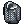
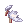
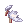

Poring Village
Jump to navigation
Jump to search
| This quest or instance is repeatable. | ||
|---|---|---|
| Cooldown | Tickets Available | |
|
Resets at 00:00 |
Solo: Unlimited | Party: Unlimited |
| Requirements | |
|---|---|
| Base Level: | - |
| Starting Point: | |
| Prerequisite(s): | Eden Academy |
| Rewards | |
| Experience: | - |
| Items: | 1  Gold (drops from Giant Gold Poring) Gold (drops from Giant Gold Poring) |
Overview
Poring Village is a custom instance, an integral part of Eden Academy's tutorial, aiming to help new players below level 50.
Gaining access
Players can gain access to Poring Village by following the Eden Academy's tutorial questline, which will naturally lead you to the instance as part of the tutorial. (Since Eden Academy's progress is account-wide, unlocking the instance for any character in the account will also unlock it for all characters.)
Walkthrough
- Create the instance by talking to Mon . You need to be in a party.
- Walk forward to trigger a small dialogue with Mom, continue the path and talk with her. She will give 20
 Grape, 1 Hood [1] and 1
Grape, 1 Hood [1] and 1  card <according to your job> to each member of the party.
card <according to your job> to each member of the party. - Depending on the size of your party, she will request you to kill a certain amount of Porings.
- It's adviced to turn on @autoloot 15 to not miss on low drop chance loot, or @autoloot 100 to grab anything.
- Following the path you will encounter with Mom after killing the requested amount. Your next challenge is to defeat the Giant Poring. Every time you interact with her she is going to give you a buff increasing all your stats by 30 and your character's size.
- If successfully killed, she will reward each party member with a
 weapon of their choice <according to your job>. Your next task would be the same as the last, to kill any Poring you encounter.
weapon of their choice <according to your job>. Your next task would be the same as the last, to kill any Poring you encounter.
- Be aware of Dizzyring's stun attack!
- At the end of the road Mom is going to be awaiting for you, but now the challenge is to defeat the Giant Gold Poring. This mini-boss has a 100% chance of dropping 1 Gold.
- Right after defeating it, she will reward each party member with 1 Novice Figure and a  armor <according to your job>. Your next task would be the same as the last two, for the final time.
- This time place close attention to Blue Devilings and White Angelings since they have a 0.5% chance of dropping
 Evil Wing and  Angel Wing respectively, so it's recommended to keep an eye on them, since they're required for some headgear quests.
Evil Wing and  Angel Wing respectively, so it's recommended to keep an eye on them, since they're required for some headgear quests. - When the last task is completed, your last challenge approaches. As you encounter Mom at the end of it you will be required to defeat the King Poring. Be aware of the minions he summons, since they reduce your flee and increase the damage you take, so it's for your best interest to get rid of them throughout AOE or individually. His MVP drop is a
 Poring Treasure Crate containing a
Poring Treasure Crate containing a  Pink Poring Hairpin [1].
Pink Poring Hairpin [1].
- Once the King Poring has been defeated you should have ended around Base Lv. 70 and Job Lv. 50. Talking to Mom and exit the instance.
Enemies
Some mob images may not be correct but the ids are. Those can be used in game to check extra info about the mobs when available.
| Image | Name | Level | HP | Size / Race / Element |
|---|---|---|---|---|

|
Island Poring | 15 | 50 | Medium / Plant / Water 1 |
| Island Drops | 18 | 92 | Medium / Plant / Fire 1 | |
| Island Eggring | 21 | 140 | Medium / Plant / Neutral 1 | |
| Island Marin | 29 | 612 | Medium / Plant / Water 2 | |

|
Island Poporing | 27 | 438 | Medium / Plant / Poison 1 |
| Island Pouring | 25 | 303 | Medium / Plant / Water 1 | |

|
Giant Poring | 25 | 15810 | Large / Plant / Poison 1 |

|
Sleepring | 36 | ???? | Medium / Formless / Neutral 1 |

|
Dizzyring | 39 | ???? | Medium / Formless / Neutral 1 |
| Melonring | 42 | 1659 | Medium / Plant / Earth 1 | |
| Gold Poring | 45 | 1908 | Medium / Angel / Holy 1 | |

|
Giant Gold Poring | 50 | 40118 | Large / Plant / Holy 1 |

|
Blue Deviling | 63 | 2485 | Large / Demon / Shadow 1 |

|
Green Ghostring | 66 | 2975 | Medium / Formless / Wind 1 |

|
White Angeling | 60 | 2155 | Medium / Angel / Holy 1 |
King Poring
|
68 | 85000 | Large / Plant / Neutral 2 |